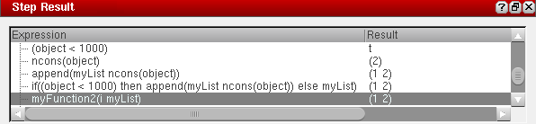

Using the Step Result Assistant
Use the Step Result assistant to examine your code as you step through the program statements. Every time you click Step to step through your code, an expression is executed, and the Step Result assistant is updated with the evaluated expression and its value.
To use the Step Result assistant:
- Choose Window – Assistants – Step Result. The Step Result assistant displays.
- Load your SKILL file and set breakpoints in your code.
- Execute a function in your code to trigger the breakpoint.
-
Click Step
to step through your code one statement at a time. The Step Result assistant is updated with the currently evaluated expression and its value.

Related Topics
Return to top